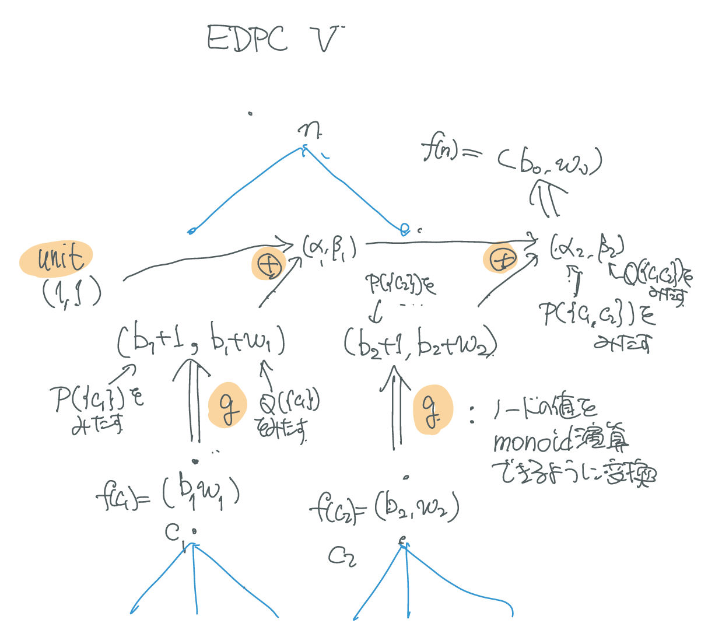

全方位木ライブラリ使用法のメモ
このライブラリで解ける問題
$\mathcal{M} = (M, \oplus, e)$ を可換モノイドとする． 根付き木 $T$ に関し，ノード $x$ の親を $p(x)$， ノード $x$ の子の集合を $C(x)$ と書く．
根付き木 $T$ に対して， $g : (M \times T \times T) \to M$ から次のように帰納的に定義される 関数 $f : T \to M$ を考える:
- $f(n) = \bigoplus \{ g(f(c), n, c) \mid c \in C(n) \} $
単に $f$ と書いたが，どこを根とするかによって異なる関数が 定義できている．明示的に根 $r$ を示すと次のようになる．
- $f_r(n) = \bigoplus \{ g(f_r(c), n, c) \mid c \in C_r(n) \} $
ここで，$F : T \to M$ を，$F(n) := f_n(n)$ で定義する．
このライブラリでは，$\mathcal{M}$ と $g$ を与えて， $F$ の各ノードでの値が計算できる．
注意
- 計算量は $O(|T|)$．
- 実装では左からの和と右からの和を利用しているので， 逆演算が定義されていなくても計算できる (が，重い)．
- $F$ 自体が問題の答となるとは限らなくて，さらにそこから もうひと計算する必要があることもある．
- g を適用して，モノイド演算が実施できるような形にするところがポイント
例題 ABC160F - Distributing Integers
木が与えられる．各頂点 $k$ につき，次の問題を解け
- 頂点 $k$ に 1 を書き，残りの頂点には，既に書き込まれた頂点に 隣接する頂点に 2, 3, … の数を書く． このように書ける方法の数を$\mod 10^9 + 7$ で求めよ．
全方位木を使うには，
- 頂点を1つ固定した問題が，木DPで解けて，
- その木DPの際に，各ノードの処理がモノイド演算でできること
が必要．ということで，まず，$k$ を固定した問題を 木DPで解く方法を考える．
- 1 は根に書くと決まっている．
- 根の子供が $c_1, c_2, c_3$ として，その部分木の数を $m_1, m_2, m_3$ とする．
- 2 ～ N を，この3つに割り振る方法を決めると，各 部分木の小問題では，$1$ から $m_1$ の問題が解けていればそれで決まる．
具体的には，上の場合，
$$f(1) = \binom{N - 1}{m_1}f(c_1)\binom{m_1}{m_2}f(c_2)\binom{m_3}{m_3}f(c_3) = (N - 1)!\prod\frac{f(c_i)}{m_i}$$
となる．一般も同じ．少し変形して，
$$ \frac{f(n)}{(m_n - 1) !} = \prod \frac{f(c)}{m_c} $$
より，$\hat{f}(n) := f(n) / (m_n - 1)!$ と置いて，
$$ \hat{f}(n) = \prod \hat{f}(c)\cdot\frac{1}{m_c} $$
となるので，モノイド演算は積，単位元1，$g(\alpha, n, c) := \alpha / m_c$で $\hat{f}$が計算でき，したがって $f$ が求められる．
例題 EDPC V Subtree
木と正整数 $M$ が与えられる． 全頂点を白黒に塗り分けるに塗り分け，任意の2つの異なる黒頂点a,bに関して， a から b へのパスが全部黒で塗られているようにする 各頂点$v$について，上を満たして $v$ が黒く塗られる塗り方の数を $\mod M$ で求めよ．
ここでは，白く塗られる塗り方の数も問われているものだと仮定して， 解を考える．
3つの条件を考える．
- B(n): n は黒く塗られ，n の子孫は条件を満たす．
- W(n): n は白く塗られ，n の子孫は条件を満たす．
- A(n): n および n の子孫はすべて白く塗られている．
ノードの集合Xについて，次のように定める．
- P(X): 全ての $c \in X$ について B(c) または A(c)
- Q(X): 全ての $c \in X$ について B(c) または W(c) であり， たかだか1つを除いて A(c) である．
これらは，n が塗れるかどうかの条件に関係する．具体的には:
- n が黒く塗れるための条件は，P(C(n))．
- n が白く塗れるための条件は，Q(C(n))．
$P(X)$, $Q(X)$, $P(\{c\})$, $Q(\{c\})$ を満たす塗り方の数を $\alpha_1, \beta_1, \alpha_2, \beta_2$ とするとき， $P(X \cup \{c\})$, $Q(X \cup \{c\})$, を満たす塗り方の数は $(\alpha_1\alpha_2, \beta_1 + \beta_2 - 1)$ である． そこで，
- $(\alpha_1, \beta_1) \oplus (\alpha_2, \beta_2) := (\alpha_1\alpha_2, \beta_1 + \beta_2 - 1)$
で，モノイド演算を定義する．単位元は $(1, 1)$ である．
また，$c$ を黒，白で塗る方法の数を $\alpha$, $\beta$ とするとき， $P(\{c\})$, $Q(\{c\})$ を満たす塗り方の数は， $\alpha + 1$, $\alpha + \beta$ である．そこで，
- $g((\alpha, \beta), n, c)) = (\alpha + 1, \alpha + \beta)$
で，$g$ を定義する．